Estructuras de control¶
Estructuras de control¶
Las estructuras de control nos permiten dirigir el flujo de ejecución del programa según ciertas condiciones. Incluyen las estructuras condicionales, repetitivas y de salto. Estas estructuras proporcionan la capacidad de tomar decisiones, repetir bloques de código y manejar situaciones excepcionales de manera organizada y eficiente.
Estructuras condicionales¶
Las estructuras condicionales permiten ejecutar bloques de código solo si se cumplen ciertas condiciones. Python utiliza las palabras clave if, elif (abreviatura de «else if») y else para definir estas condiciones.
edad = input('Escribe tu edad: ') # función input para leer de teclado
edad = int(edad) # variable
if edad < 18: # estructura condicional
print("Eres menor de edad")
elif edad >= 18 and edad < 65:
print("Eres un adulto")
else:
print("¡Jubilado! Enhorabuena")
En la primera línea hemos creado una variable llamada edad y hemos almacenado el valor introducido por teclado.
El resto del código es una estructura condicional que tiene dos condiciones.
- Primero (en la línea 3) decimos “¿es la edad menor que 18?”.
- Si lo es, se ejecutará el bloque de instrucciones que tiene en su interior (línea 4) y no se ejecutarán el resto de instrucciones (5, 6, 7 y 8). Pero si no lo es, el programa no ejecutará la línea 4, sino que saltará a la 5 y comprobará la segunda condición. “¿Es edad mayor o igual que 18 y menor que 65?”. Si lo es, el programa ejecutará el bloque de instrucciones que contiene (línea 6) y no se ejecutarán el resto de instrucciones (líneas 7 y 8). Pero ni tampoco lo es, el programa saltará a la línea 7 y ejecutará el bloque de instrucciones contenidos en el else (la línea 8).
Como puedes ver, para indicar que un bloque de código está dentro de algún otro elemento, lo que hacemos es tabularlo, es decir, escribimos la instrucción después de pulsar la tecla tabulador:
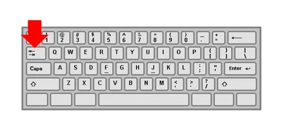
Espaciado y sangría
Python utiliza la sangría para definir bloques de código, lo cual es extremadamente importante. Cada nivel de sangría (habitualmente cuatro espacios) indica un nuevo bloque. El espaciado adecuado es vital en Python, ya que define la estructura lógica del programa.
def saludar(nombre):
if nombre:
print(f"Hola, {nombre}!")
else:
print("¡Hola, Mundo!")
Estructuras repetitivas¶
Las estructuras repetitivas nos permiten repetir un bloque de código las veces que necesitemos. Popularmente se les conoce como bucles, y en Python tenemos dos: los bucles for y los bucles while.
El bucle for se utiliza para repetir un bloque de código cuando sabemos exactamente cuantas veces queremos repetirlo.
Como puedes ver por el fragmento de código inferior, range usa 1, 2 o 3 parámetros.
- Cuando usa uno, el bloque se repetirá el número de veces que se indique -1 (sin incluir al número).
- Cuando se usan dos parámetros, el primero indica el punto inicial y el segundo el punto final (sin incluir este último).
- Cuando se usan tres parámetros, los dos primeros funcionan igual y el tercero indica el salto de avance desde el primero al siguiente hasta llegar al último.
for numero in range(5):
print(numero) # Muestra 0 1 2 3 4
for numero in range(5,7):
print(numero) # Muestra 5 6
for numero in range(5,11,2):
print(numero) # Muestra 5 7 9
for numero in range(9,2,-2):
print(numero) # Muestra 9 7 5 3
for nombre in ['Abel', 'Beatriz', 'Conchi', 'Diana', 'Elena', 'Francisco']:
print('Hola', nombre) # Muestra Hola Abel, Hola Beatriz, Hola Conchi, Hola Diana, Hola Elena, Hola Francisco
EL bucle while, a diferencia del for, se repite siempre que una condición especificada sea verdadera.
contador = 0
while contador < 5:
print(contador)
contador = contador + 1
Codificación¶
Para entrenar un poco nuestra cabeza realizaremos los niveles 12 y 13 del siguiente juego:
Actividades¶
📝 AA4.13 Estructuras de control¶
(C.ESP1 / CE1.2 / IC1-3p)
Para que puedas practicar sobre el concepto de estructura de control, aquí tienes una batería de ejercicios resueltos con explicaciones detalladas de cada uno.
-
Escribe un programa que pida un número al usuario y determine si es positivo, negativo o cero.
Solución
# Solicitar un número al usuario numero = float(input("Introduce un número: ")) # Condición para evaluar si es positivo, negativo o cero if numero > 0: print("El número es positivo.") elif numero < 0: print("El número es negativo.") else: print("El número es cero.") -
Escribe un programa que pida un número al usuario y determine si es par o impar
(num % 2 == 0).Solución
# Solicitar un número al usuario numero = int(input("Introduce un número entero: ")) # Verificar si el número es par o impar if numero % 2 == 0: print("El número es par.") else: print("El número es impar.") -
Escribe un programa que calcule si un año es bisiesto.
Operadores and, or, not
Estos operadores sirven para hacer condiciones más complejas en una sentencia if.
Solución
year = input('Escribe un año: ') year = int(year) # Un año es bisiesto si es divisible por 4 `(year % 4 == 0)`. # De estos años bisiestos hay que eliminar los que son divisibles por `100` y añadir los que son divisibles por `400`. if (year % 4 == 0) and ( (year % 100 != 0) or (year % 400 == 0) ): print(year, 'es bisiesto') else: print(year, 'no es bisiesto') # Aunque los paréntesis no son obligatorios, es recomendable usarlos para que se pueda entender mejor el código. -
Escribe un programa que calcule si una persona puede subir a una montaña rusa. Solo podrá subir si su altura en centímetros es mayor o igual a 150 y también debe ser menor o igual a 200.
Solución
altura = input('Escribe tu altura en centímetros: ') altura = int(altura) if (altura >= 150) and (altura <= 200): print('Puedes pasar') else: print('No puedes pasar') -
Escribe un programa que calcule el factorial
factorial = factorial * numero de un número introducido por el usuariousando un buclewhile.Solución
Usamos un bucle# Solicitar un número entero numero = int(input("Introduce un número entero: ")) # Inicializar el resultado del factorial factorial = 1 # Usar un bucle while para calcular el factorial while numero > 0: factorial = factorial * numero numero = numero - 1 # Mostrar el resultado print("El factorial es:", factorial)whilepara multiplicar el número por los valores decrecientes hasta que llega a 1. El resultado se almacena en la variable factorial. -
Escribe un programa que traduzca el mes del año en la estación a la cual pertenece ese mes. Los meses de cada estación son:
- Invierno: 1, 2, 12
- Primavera: 3, 4, 5
- Verano: 6, 7, 8
- Otoño: 9, 10, 11
-
Escribe un programa que pida cinco números y cuente cuántos de ellos son mayores que 10.
Solución
# Inicializar el contador contador = 0 # Usar un bucle for para pedir 5 números for i in range(5): numero = float(input(f"Introduce el número {i + 1}: ")) if numero > 10: contador += 1 # Mostrar cuántos números fueron mayores que 10 print(f"Has introducido {contador} números mayores que 10.")Usamos un bucle
forpara pedir cinco números al usuario y un condicional if para aumentar el contador si el número es mayor que 10. -
Realiza un programa que imprima la tabla del 6 pista:
print('6 x', i, '=', 6*i)Solución
for i in range(1, 11): print('6 x', i, '=', 6 * i) -
Escribe un programa que calcule la suma de todos los números pares entre 1 y 100.
Solución
# Inicializar la suma suma = 0 # Usar un bucle for para recorrer los números del 1 al 100 for numero in range(1, 101): if numero % 2 == 0: suma += numero # Mostrar el resultado print(f"La suma de los números pares del 1 al 100 es: {suma}")Usamos un bucle
forpara recorrer los números del 1 al 100 y un condicional if para sumar solo los números pares. -
Escribe un programa que pida tres números y determine cuál es el mayor.
Solución
# Solicitar tres números al usuario numero1 = float(input("Introduce el primer número: ")) numero2 = float(input("Introduce el segundo número: ")) numero3 = float(input("Introduce el tercer número: ")) # Determinar cuál es el mayor if numero1 >= numero2 and numero1 >= numero3: mayor = numero1 elif numero2 >= numero1 and numero2 >= numero3: mayor = numero2 else: mayor = numero3 # Mostrar el mayor número print(f"El número mayor es: {mayor}")Usamos condiciones compuestas con operadores and para comparar los tres números y determinar cuál es el mayor.
-
Escribe un programa que pida dos números y cuente cuántos múltiplos de 3 hay entre ellos.
Solución
# Solicitar los dos números numero1 = int(input("Introduce el primer número: ")) numero2 = int(input("Introduce el segundo número: ")) # Asegurar que el primer número es menor que el segundo if numero1 > numero2: numero1, numero2 = numero2, numero1 # Contar los múltiplos de 3 contador = 0 for numero in range(numero1, numero2 + 1): if numero % 3 == 0: contador += 1 # Mostrar el resultado print(f"Hay {contador} múltiplos de 3 entre {numero1} y {numero2}.")Primero aseguramos que el primer número es menor que el segundo intercambiando sus valores si es necesario. Luego, usamos un bucle
forpara contar los múltiplos de 3. -
Escribe un programa que pida un número entero y calcule la suma de sus dígitos.
Solución
# Solicitar un número entero al usuario numero = input("Introduce un número entero: ") # Inicializar la suma suma = 0 # Recorrer los dígitos y sumarlos for digito in numero: suma += int(digito) # Mostrar la suma de los dígitos print(f"La suma de los dígitos es: {suma}")Convertimos el número en una cadena para poder recorrer sus dígitos con un bucle
for. Cada dígito se convierte de nuevo en entero para sumarlo -
Escribe un programa que imprima los números del 1 al 10 en orden inverso.
Solución
# Usar un bucle for para imprimir los números en orden inverso for numero in range(10, 0, -1): print(numero)Usamos un bucle
forcon un tercer parámetro negativo en la funciónrange()para contar hacia atrás desde 10 hasta 1. -
Escribe un programa que muestre un menú con tres opciones: sumar dos números, restar dos números o multiplicar dos números. El programa debe repetirse hasta que el usuario elija salir.
Solución
# Inicializar la opción seleccionada opcion = 0 # Repetir el menú hasta que el usuario elija salir while opcion != 4: # Mostrar el menú print("Menú de operaciones:") print("1. Sumar dos números") print("2. Restar dos números") print("3. Multiplicar dos números") print("4. Salir") opcion = int(input("Elige una opción (1-4): ")) if opcion == 1: numero1 = float(input("Introduce el primer número: ")) numero2 = float(input("Introduce el segundo número: ")) print(f"La suma es: {numero1 + numero2}") elif opcion == 2: numero1 = float(input("Introduce el primer número: ")) numero2 = float(input("Introduce el segundo número: ")) print(f"La resta es: {numero1 - numero2}") elif opcion == 3: numero1 = float(input("Introduce el primer número: ")) numero2 = float(input("Introduce el segundo número: ")) print(f"La multiplicación es: {numero1 * numero2}") elif opcion == 4: print("Saliendo del programa...") else: print("Opción no válida. Intenta de nuevo.")El programa utiliza un bucle
whileque repite un menú de opciones hasta que el usuario elija salir. Dependiendo de la opción seleccionada, se realizan distintas operaciones matemáticas básicas.
🔨 AAR4.14 Refuerzo Estructura control¶
(C.ESP1 / CE1.2 / IC1-3p)
-
Escribe un programa que pida al usuario su edad y determine si es mayor de edad o no
Solución
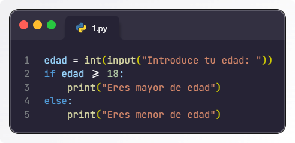
Solución ejercicio -
Escribe un programa que pida un número al usuario y determine si es par o impar.
Solución
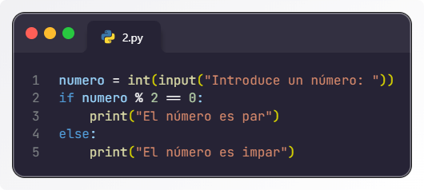
Solución ejercicio -
Escribe un programa que pida dos números al usuario y muestre cuál es mayor.
Solución
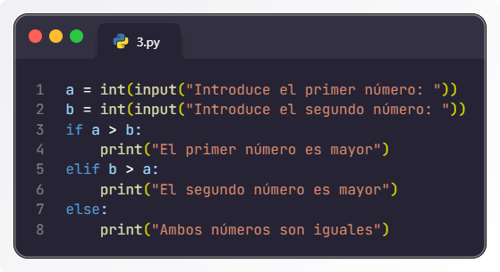
Solución ejercicio -
Escribe un programa que pida un número al usuario y determine si es positivo, negativo o cero.
Solución
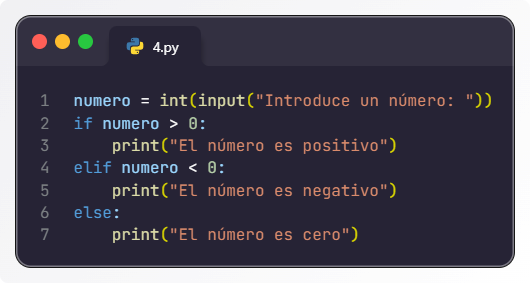
Solución ejercicio -
Escribe un programa que pida un número del 1 al 7 y muestre el día de la semana correspondiente.
Solución
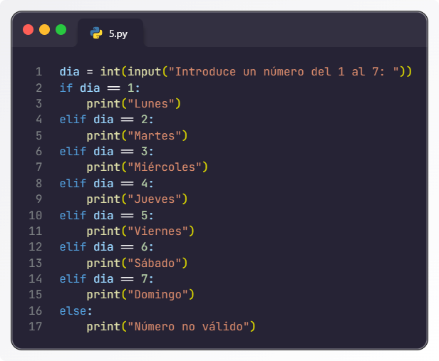
Solución ejercicio -
Escribe un programa que pida una temperatura en grados Celsius y la convierta a Fahrenheit.
Solución
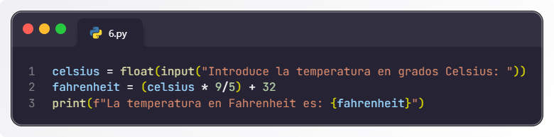
Solución ejercicio -
Escribe un programa que pida una palabra y la muestre al revés.
Solución
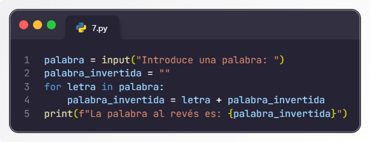
Solución ejercicio -
Escribe un programa que pida un número y muestre su tabla de multiplicar del 1 al 10.
Solución
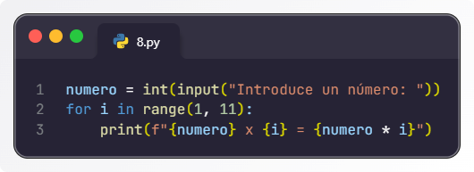
Solución ejercicio -
Escribe un programa que pida un número y calcule la suma de todos los números desde 1 hasta ese número.
Solución
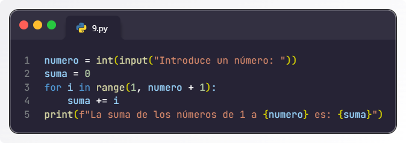
Solución ejercicio -
Escribe un programa que pida un número y que luego multiplique todos los números entre el 1 y el número introducido. Esta operación se llama factorial.
Solución
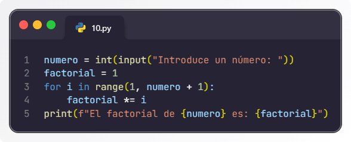
Solución ejercicio -
Escribe un programa que pida una palabra y determine si es un palíndromo (se lee igual de izquierda a derecha que de derecha a izquierda).
Solución
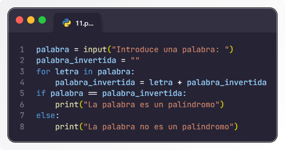
Solución ejercicio -
Escribe un programa que pida un número y muestre si es un número primo o no.
Solución
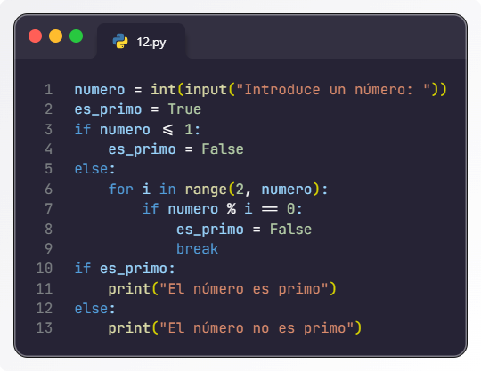
Solución ejercicio -
Escribe un programa que pida un número y muestre los números impares desde 1 hasta ese número.
Solución
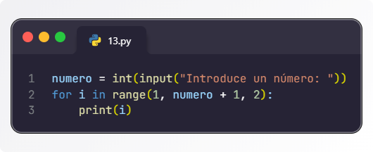
Solución ejercicio -
Escribe un programa que pida una frase y cuente cuántas vocales tiene.
Solución
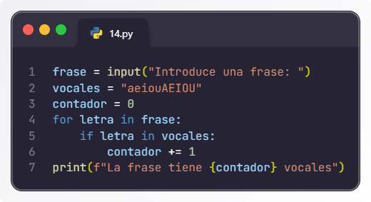
Solución ejercicio -
Escribe un programa que pida un número y muestre todos los números pares desde 1 hasta ese número.
Solución
Solución ejercicio -
Escribe un programa que pida una cantidad de segundos y la convierta a horas, minutos y segundos.
Solución
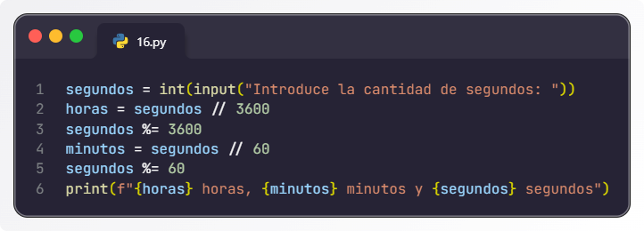
Solución ejercicio -
Escribe un programa que pida una nota (0-10) y muestre si está suspenso (menos de 5), aprobado (5-6), bien (7-8), notable (9) o sobresaliente (10).
Solución
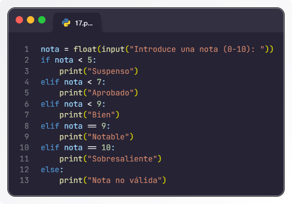
Solución ejercicio -
Escribe un programa que pida al usuario un número y muestre si es un número Armstrong (un número igual a la suma de sus propios dígitos cada uno elevado a la potencia de la cantidad de dígitos).
Solución
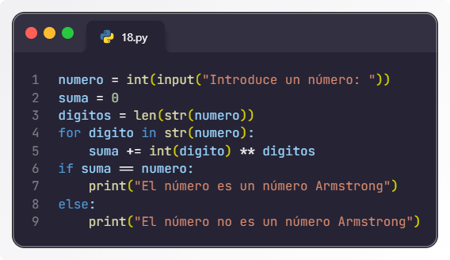
Solución ejercicio -
Escribe un programa que pida dos números y muestre su máximo común divisor (MCD).
Solución
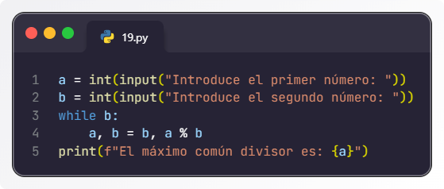
Solución ejercicio -
Escribe un programa que pida un número y muestre la secuencia de Fibonacci hasta ese número.
Solución
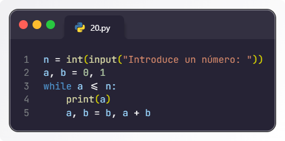
Solución ejercicio